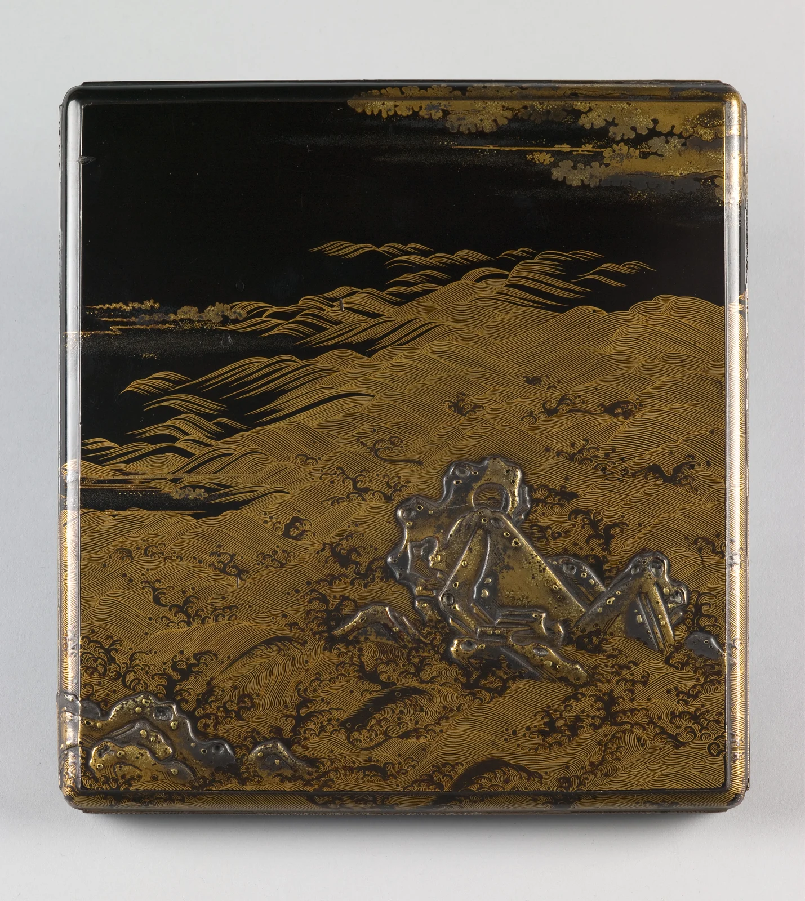

Gold brings the waves close. Black lets them recede.
Large rocks low right; small rocks left. Dense waves loosen into darkness.
Gold against black: a value contrast. Cool grey interrupts the warmth.
The design suggests a sea. Photographic light reveals the object.
Editorial study colours and proportions; not sampled.
Unidentified maker, Japan. Second half of the 15th century.[1]
The waves move. The box rests. Daily life holds an imagined distance.
Dense lines below; weight low right. A smaller shape left. Space above.
70% black + 25% gold + 5% silver-grey. Pale paper for readable text.
Editorial study colours and proportions; not sampled.
Unidentified maker · Writing box
Saint Louis Art Museum · 245:1972
Original creator’s rights respected; museum: Public Domain.
Museum image. Independent visual analysis.